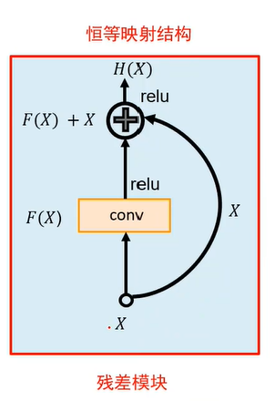

ResNet
Why ResNet ?
当神经网络层数变深时，模型性能可能会不增反降。
举个例子，对于某数据集，考虑以下情况：
- 在测试集上，100层的网络性能低于20层的网络
- 在训练集上，100层的网络性能低于20层的网络
单单看前者，猜想出现过拟合的可能性较大。因为100层的网络能够拟合更加复杂的函数，对训练集的拟合效果也会更好，但可能导致在测试集上表现并不好（100层网络可能仅仅是记住了训练集的每一个样本的特征及其训练标签，而在面对新的没有见过的样本（比如测试样本）时，就无能为力了）。
然而，再看后者，在训练集上都不达标了，这显然不是过拟合，并且网络越深性能越差，一定是某些其他地方出了问题！
没错，在100层网络的训练过程中，网络的正、反向信息流动不顺畅，从而导致网络没有充分被训练，这正是上面的例子中现象产生的原因！
**残差网络(ResNet)**的提出解决了这一问题，它通过从当前层（不妨记作Current Layer）直接向经过某个网络块（不妨记作F_Block）后得到的后面的层（不妨记作Layer）之间加一条线，使得Current Layer的信息可以直接传给Layer。这样，即使F_Block完全不工作(当然，工不工作由神经网络自行学习决定)，Layer也可以得到Current Layer的信息，拿上面的例子来说，若对其使用残差网络模型，那么100层的网络的性能≥20层的神经网络的性能（再不济，100层网络中全部的F_Block都不工作，此时取等号；但只要有一个F_Block工作，那么模型的性能将会提升）。
What’s ResNet ?

输入为X，此时有两条分支，其一是经过F_Block(反映在图上就是conv)得到F(x)，其二是将X直接传递到后面层，然后将两者加起来，就是后面的层最终得到的输出了（反映在图上就是H(X)）
即：
$$H(X)=X+F(X)$$
Why called ResNet ?
在一个残差块的信息传递过程中，神经网络学习的是F(.)这个函数，并据此得到F(X)，而$F(X)=H(X)-X$，这是新的输出(H(X))与上一个输出(X)的差值，所以起名为残差网络。